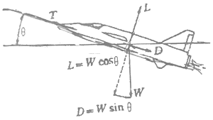
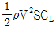
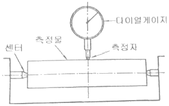
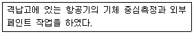
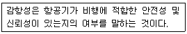
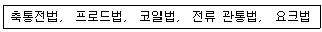
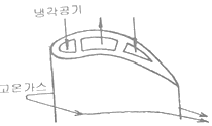

항공기관정비기능사 (2014-01-26 기출문제)
1과목: 비행원리
1. 단일회전날개 헬리콥터의 양력과 추력에 대한 설명으로 옳은 것은?
- 양력은 꼬리 회전날개에 의하여 발생되며, 추력은 주 회전 날개에 의하여 발생된다.
- 양력은 주회전 날개에 의하여 발생되며, 추력은 꼬리 회전 날개에 의하여 발생된다.
- 양력은 주 회전 날개와 꼬리 회전날개에 의하여 발생되며, 추력은 꼬리 회전 날개에 의하여 발생된다.
- 양력과 추력 모두가 주 회전날개에 의하여 발생된다.
(정답률: 77%)

2. 헬리콥터가 전진비행을 할때 회전 날개 깃에 발생하는 양력분포의 불균형을 해결할수 있는 방법은?
- 전진하는 깃의 받음각과 후퇴하는 깃의 받음각을 증가시킨다.
- 전진하는 깃의 받음각은 감소시키고 후퇴하는 깃의 받음각은 증가시킨다.
- 전진하는 깃의 받음각은 증가시키고 후퇴하는 깃의 받음각은 감소시킨다.
- 전진하는 깃의 받음각과 후퇴하는 깃의 받음각 모두를 감소시킨다.
(정답률: 73%)
3. 흐름이 없는, 즉 정지된 유체에 대한 설명으로 옳은 것은?
- 정압과 동압의 크기가 같다
- 전압의 크기는 영(0)이된다
- 동압의 크기는 영(0)이 된다
- 정압의 크기는 영(0)이 된다
(정답률: 61%)
4. 비행기가 고도 1000m 상공에서 활공하여 수평활공 거리가 20000m 가 된다면 이 비행기의 양항비는 얼마인가?
- 1/20
- 2
- 1/2
- 20
(정답률: 86%)
5. 비행기의 받음각이 일정 각도 이상 되어 최대 양력값을 얻었을때에 대한 설명으로 틀린 것은?
- 이때의 고도를 최고고도라 한다.
- 이때의 받음각을 실속받음각이라 한다.
- 이때의 비행기 속도를 실속속도라 한다.
- 이때의 양력계수값을 최대양력계수라 한다.
(정답률: 68%)
6. 다음 중 NACA 4자리 계열의 날개골 중에서 윗면과 아랫면이 대칭인 날개는?
- 4400
- 4415
- 2430
- 0012
(정답률: 72%)
7. 해면고도의 기온이 15 ℃, 항공기의 비행고도가 8000M 일때 외기 온도는 몇 ℃ 인가? (단, 대류권에서는 고도가 1000M 씩 증가할 때마다 6.5 ℃ 가 감소한다)
- -37
- -15
- 0
- 15
(정답률: 87%)
8. 다음 중 비행기의 방향안정성 향상과 가장 관계가 없는 것은?
- 도살핀
- 날개의 쳐든각
- 수직안정판
- 날개의 뒤젖힘각
(정답률: 56%)
9. 비행기의 안정성 및 조종성의 관계에 대한 설명으로 틀린 것은
- 안정성이 클수록 조종성은 증가된다.
- 안정성과 조종성은 서로 상반되는 성질을 나타낸다.
- 안정성과 조종성 사이에는 적절한 조화를 유지하는 것이 필요하다.
- 안정성이 작아지면 조종성은 증가되나, 평형을 유지시키기 위해 조종사에게 계속적인 주의를 요한다.
(정답률: 83%)
10. 비행기가 그림과 같이 θ 만큼 경사진 직선비행경로를 따라 등속도로 상승할 때 비행기에 작용하는 비행 방향의 추력을 옳게 나타낸 것은?

- 직선 비행경로의 수평 중력 성분
- 직선 비행경로의 수직 중력 성분
- 항력 + 직선 비행경로의 중력 성분
- 양력 + 직선 비행 경로의 중력 성분
(정답률: 64%)
11. 비행기 날개의 양력을 구하는 식

에서 S가 의미하는 것은? (단, ρ : 밀도, V : 속도, CL : 양력계수)- 날개의 속도
- 날개의 면적
- 날개 주변의 공기속도
- 날개의 형상계수
(정답률: 89%)
12. 공기의 동점성 계수를 구하는 식으로 옳은 것은? (단, ρ 는 공기밀도, μ 는 절대점성계수이다.)
- ρㆍμ
- μ/ρ
- ρ + μ
- ρ/μ
(정답률: 57%)
13. 항공기의 이착륙시 사용하는 고항력 장치가 아닌 것은?
- 윙렛(wing let)
- 에어브레이크(air brake)
- 드래그 슈트(drag chute)
- 역추력장치(thrust reverser)
(정답률: 87%)
14. 프로펠러 회전시 발생하는 원추각을 만드는 힘의 구성으로 옳은 것은?
- 원심력과 중력
- 중력과 항력
- 원심력과 양력
- 양력과 항력
(정답률: 77%)
15. 항공기 조종성 요소와 주된 조종장치의 연결이 틀린 것은?
- 롤링 조종성 : 에일러론(aileron)
- 방향 조종성 : 러더 (rudder)
- 세로 조종성 : 엘리베이터(elevator)
- 피칭조종성 : 스로틀(throttle)
(정답률: 79%)
16. 리벳의 부품번호 MS 20470 AD 6-6에서 리벳의 재질을 나타내는 AD는 어떤 재질을 의미하는가?
- 1100
- 2017
- 2117
- 모넬
(정답률: 57%)
17. 그림과 같이 실린더 헤드, 플라이휠 등 측정물을 회전시켜 다이얼게이지로 측정한 최대값과 최소값의 차를 구하는 것은 무엇을 측정하기 위한 방법인가?

- 원통의 진원 측정
- 평면도 측정
- 기어의 백래시 측정
- 내경과 외경 측정
(정답률: 77%)
18. 항공기 또는 그 부품 및 장비의 손상이나 기능불량 등을 원래의 상태로 회복시키는 작업에 해당되는 것은?
- 항공기 수리
- 항공기 검사
- 기어의 백래시 측정
- 내경과 외경 측정
(정답률: 92%)
19. 보기와 같은 정비를 하였다면 어떤 점검에 해당하는가?

- A점검
- B점검
- C점검
- D점검
(정답률: 48%)
20. 여러개의 얇은 금속편으로 이루어진 측정 기기로, 접점 또는 작은 홈의 간극 등을 측정하는데 사용되는 것은?
- 피치게이지
- 센터게이지
- 두께 게이지
- 나사 게이지
(정답률: 80%)
2과목: 항공기정비
21. 항공기 유압계통의 알루미늄 합금 튜브에 긁힘이나 찍힘이 튜브 두께의 몇 % 이내 일때 수리가 가능한가?
- 5
- 10
- 20
- 30
(정답률: 71%)
22. 리벳 작업시 리벳 지름을 결정하는 설명으로 옳은 것은?
- 접합하여야 할 판 전체 두께의 3배 정도로 한다.
- 접합하여야 할 판재 중 두꺼운 판 두께의 3배 정도로 한다.
- 접합하여야 할 판재들의 평균 두께의 3배 정도로 한다.
- 접합하여야 할 판재 중 얇은 판 두께의 3배 정도로 한다.
(정답률: 72%)
23. 항공기 잭(JACK) 사용에 대한 설명으로 옳은 것은?
- 잭 작업은 격납고에서만 실시한다.
- 항공기 옆면이 바람의 방향을 향하도록 한다.
- 항공기의 안전을 위하여 최대 높이로 들어올린다.
- 잭을 설치한 상태에서는 가능한한 항공기에 작업자가 올라가는 것은 삼가야한다.
(정답률: 78%)
24. 다음 문장에서 설명하는 감항성을 영어로 옳게 표시한 것은?

- maintenance
- comfortability
- inspection
- airworthness
(정답률: 78%)
25. 활주로 쵱단시 관제탑에서 사용하는 신호등의 신호로 녹색등이 켜져 있을때의 의미와 그에 따른 사항으로 옳은 것은?
- 위험 : 정차
- 안전 : 횡단가능
- 안전 : 빨리 횡단하기
- 위험 : 사주를 경계한후 횡단가능
(정답률: 87%)
26. 다음 중 보어스코프 검사시기로 적절하지 않은 것은?
- 시동시 과열시동 되었을때
- 항공기에서 주기적으로 기관 내부를 검사할 때
- 이물질(랭)이 기관흡입구로 빨려 들어갔을때
- 14시간 이상의 장거리 비행 후 기관 배기부를 점검할 때
(정답률: 54%)
27. 쇠톱(HACK SAW) 사용법에 대한 설명으로 틀린 것은?
- 쇠톱을 당길때 절삭되도록 한다.
- 절단시 잇날이 가공물에 적절한 수가 접하도록 한다.
- 얇은 판재 절단시 판재를 목재 사이에 끼워 판재에 손상이 가지 않도록 한다.
- 작업이 끝난 후 톱날의 장력을 느슨하게 한후 보관한다.
(정답률: 68%)
28. 항공기 급유 및 배유 시에는 반드시 3점 접지를 하는데 다음 중 3점 접지에 해당되지 않는 것은?
- 항공기와 연료차
- 항공기와 지면
- 연료차와 지면
- 항공기와 작업자
(정답률: 90%)
29. 다음 중 리벳 제거 작업 시 가장 먼저 해야 할 작업은?
- 줄 작업
- 센터펀치
- 드릴링
- 펀지 제거
(정답률: 71%)
30. 다음 중 항공기용 소화제의 구비 조건으로 틀린 것은?
- 충분한 방출 압력이 있어야 한다.
- 장기가 안정되고 저장이 쉬워야 한다.
- 높은 소화능력보다는 무게가 가벼워야 한다.
- 항공기의 기체 구조물을 부식시키지 않아야 한다.
(정답률: 90%)
31. 다음 중 공기 중에서 금속과 이에 접촉하는 금속 또는 다른 물질 접촉면에 상대적으로 반복하여 미세한 미끄럼이 생길때 금속 표면에 일어나는 손상은?
- 마찰부식
- 갈바닉부식
- 표면부식
- 입자간부식
(정답률: 61%)
32. change 59°F to degrees °C?
- 0
- 48.6
- 15
- 138.2
(정답률: 76%)
33. 산소취급시에 주의해야 할 사항으로 틀린 것은?
- 산소를 보급하거나 취급시 환기가 잘되도록 한다.
- 액체산소 취급시 동상예방을 위해 장갑, 앞치마 및 고무장화 등을 착용한다.
- 취급시 오일이나 구리스 등을 콬크에 사용하여 작업이 용이하도록 해야한다.
- 화재에 대비해 소화기를 항상 비치하고 일정 거리 이내에서 흡연이나 인화성 물질 취급을 금한다.
(정답률: 82%)
34. 보기와 같은 방법을 사용하는 비파괴 검사법은?

- 방사선 검사
- 자분탐상검사
- 초음파 검사
- 침투탐상검사
(정답률: 75%)
35. 다음 중 안전결선 작업에 대한 설명으로 틀린 것은?
- 복선식과 단선식 방법이 있다.
- 안전결선의 감기는 방향이 부품을 죄는 반대 방향이 되도록 한다.
- 안전결선은 한번 사용한 것은 다시 사용하지 않는다.
- 2개의 유닛사이에 안전결선 시 구멍의 위치는 통하는 구멍이 중심선에 대해 좌로 45도 기울어진 위치가 되는 것이 이상적이다.
(정답률: 79%)
36. 150℃, 공기 7kg 을 부피가 일정한 상태에서 650℃ 까지 가열하는데 필요한 열량은 몇 kcal 인가? (공기의 정적비열 0.172 kcal/kg℃, 정압비열 0.24 kcal/kg℃)
- 430
- 600
- 602
- 840
(정답률: 60%)
37. 항공기의 역추력 장치의 일반적인 사용시기로 옳은 것은?
- 상승 비행시
- 이륙시
- 순항 비행시
- 착륙시
(정답률: 90%)
38. 일반적으로 왕복기관의 크랭크핀을 속이 비어 있는 상태로 제작하는 이유가 아닌 것은?
- 윤활유의 통로 역할을 한다.
- 크랭크축 전체의 무게를 줄여준다.
- 회전하는 크랭크의 진동을 감소시킨다.
- 탄소 침전물, 찌꺼기 등을 모으는 방 역할을 한다.
(정답률: 62%)
39. 가스터빈 기관의 윤활유 냉각 방식 중 윤활유가 갖고 있는 열을 연료에 전달시켜 윤활유를 냉각시키는 동시에 연료를 가열하여 연료의 연소효율을 증가시키는 방식은?
- by-pass 냉각방식
- 공랭식 냉각방식
- 오일-오일 열교환 냉각방식
- 연료-오일 열교환 냉각방식
(정답률: 84%)
40. 왕복기관의 윤활계통에서 릴리프밸브(relief valve)의 주된 역할로 옳은 것은?
- 윤활유 온도가 높을때는 윤활유를 냉각기로 보내고 낮을 때는 직접 윤활유 탱크로 가도록 한다.
- 윤활유 여과기가 막혔을때 윤활유가 여과기를 거치기 않고 직접 기관의 내부로 공급되게 한다.
- 기관의 내부로 들어가는 윤활유의 압력이 높을 때 작동하여 압력을 낮추어 준다.
- 윤활유가 불필요하게 기관 내부로 스며 들어가는 것을 방지한다.
(정답률: 59%)
3과목: 항공기관
41. 항공기용 기관 중 왕복기관의 종류로 나열된 것은?
- 성형기관, 대향형기관
- 로켓기관, 터보샤프트 기관
- 터보팬기관, 터보프롭기관
- 터보프롭기관, 터보샤프트기관
(정답률: 84%)
42. 가스터빈기관을 장착한 항공기의 고도가 높아질수록 추력은 어떻게 변화하는가?
- 감소한다.
- 감소하다 증가한다.
- 증가한다.
- 증가하다 감소한다.
(정답률: 62%)
43. 다음 중 배기가스온도(EGT)는 어느부분에서 측정된 온도를 나타내는가?
- 연소실
- 터빈입구
- 압축기 출구
- 터빈출구
(정답률: 64%)
44. 가스터빈기관에 사용하는 연료 여과기 중 여과기의 필터가 종이로 되어 있어 주기적인 교환이 필요한 것은?
- 카트리지형
- 석면형
- 스크린-디스크형
- 스크린형
(정답률: 82%)
45. 공랭식 기관의 구성품 중에서 실린더의 위치에 관계없이 공기를 고르게 흐르도록 유도하여 냉각효과를 증진시켜주는 것은?
- 냉각핀
- 배플
- 카울플랩
- 과급기
(정답률: 61%)
46. 항공용 왕복기관의 일반적인 흡입계통을 공기 유입순서대로 나열한 것은?
- 공기여과기 - 공기스쿠프 - 기화기 - 알터네이트 공기밸브 - 흡기밸브 - 매니폴드
- 기화기 - 공기 여과기 - 공기 스쿠프 - 알터네이트 공기밸브 - 매니폴드 - 흡기밸브
- 매니폴드 - 공기 여과기 - 공기 스쿠프 - 알터네이트 공기밸브 - 기화기 - 흡기밸브
- 공기 여과기 - 공기 스쿠프 - 알터네이트 공기밸브 - 기화기 - 매니폴드 - 흡기밸브
(정답률: 67%)
47. 엔탈피와 물리적 성질이 가장 유사한 것은?
- 힘
- 에너지
- 운동량
- 엔트로피
(정답률: 58%)
48. 왕복기관의 비연료 소비율을 옳게 설명한 것은?
- 1m 를 가기위해 소비되는 연료량
- 1리터의 연료로 발생되는 에너지의 비율
- 1시간당 1마력을 발생시키는데 소비된 연료량
- 제동마력과 단위시간당 기관이 소비한 연료 에너지와의 비
(정답률: 66%)
49. 그림과 같은 터빈깃의 냉각방법을 무엇이라 하는가?

- 충돌냉각
- 침출냉각
- 공기막냉각
- 대류냉각
(정답률: 72%)
50. 가스터빈기관 연소실의 구비조건에 해당되지 않는 것은?
- 신뢰성이 높을것
- 최소의 압력손실을 갖을것
- 가능한 한 큰 사이즈 일것
- 안정되고 효율적으로 작동될것
(정답률: 89%)
51. 가스터빈기관에 사용되는 원심식 압축기의 주요 구성품이 아닌 것은?
- 회전자(rotor)
- 디퓨져(diffuser)
- 매니폴드(manifold)
- 임펠러(impeller)
(정답률: 73%)
52. 가스터빈기관의 구성품에 속하지 않는 것은?
- 실린더
- 터빈
- 연소실
- 압축기
(정답률: 82%)
53. 가스터빈기관의 연소실 구성품 중 스웰 가이드 베인(swirl guide vane)이 하는 역할과 가장 유사한 기능을 하는 후기연소기의 구성품은?
- 디퓨져
- 불꽃홀더
- 테일콘
- 가변 면적 배기노즐
(정답률: 48%)
54. 왕복기관의 시동기 계통 구성품이 아닌 것은?
- 차단기
- 터빈로터
- 배터리
- 시동 솔레노이드
(정답률: 56%)
55. 압력분사식 기화기에서 챔버(chamber) A와 B 사이에 막이 파손되었다면 예상되는 발생현상은?
- 연료가 차단될 것이다.
- 연료는 계속 공급될 것이다.
- 연료의 압력이 증가할 것이다.
- 연료의 흐름이 증가할 것이다.
(정답률: 54%)
56. 18개의 실린더를 갖고 있는 왕복기관의 각 실런더의 지름이 0.15m 이고 실린더의 길이가 0.2m 리며 피스톤의 행정거리가 0.18m 라고 한다면 이기관의 총 행정체적은 몇 m3 인가?
- 0.035
- 0.042
- 0.⑤7
- 0.063
(정답률: 49%)
57. 프로펠러의 회전력(torque)에 의한 굽힘 모멘트를 견디기 위하여 프로펠러 깃의 형태는 어떻게 만들어야 하는가?
- 프로펠러 깃 끝으로 갈수록 깃의 시위를 작게 한다.
- 프로펠러 깃 끝으로 갈수록 깃의 시위를 크게 한다.
- 프로펠러 중심으로 갈수록 깃의 시위를 크게한다.
- 프로펠러 중심으로 갈수록 깃의 단면적을 크게한다.
(정답률: 49%)
58. 윤활유 계통의 점검에서 윤활유 압력이 높은 결함이 발생했을때 원인과 가장 관계가 먼것은?
- 점도가 너무 높은 윤활유
- 장시간 수행된 난기 운전
- 윤활유 압력(oil pressure)계의 결함
- 윤활유 릴리프 밸브(oil relief valve)의 결함
(정답률: 59%)
59. 다음 중 대형 가스터빈기관의 시동기로 가장 적합한 것은?
- 전동기식 시동기
- 공기터빈식 시동기
- 가스터빈식 시동기
- 시동-발전기식 시동기
(정답률: 52%)
60. 실린더 헤드에 장착되어 잇는 밸브 구성품 중에서 한쪽끝은 밸브 스템에 접촉되어 잇고, 다른 한쪽 끝은 푸시로드와 접촉되어 밸브를 열고 닫게 하는 구성품은?
- 캠
- 로커 암
- 밸브
- 밸브스프링
(정답률: 81%)